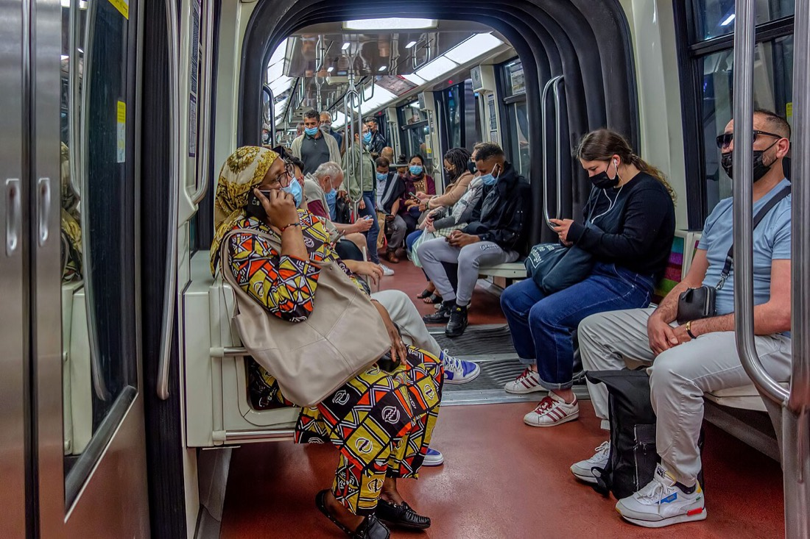
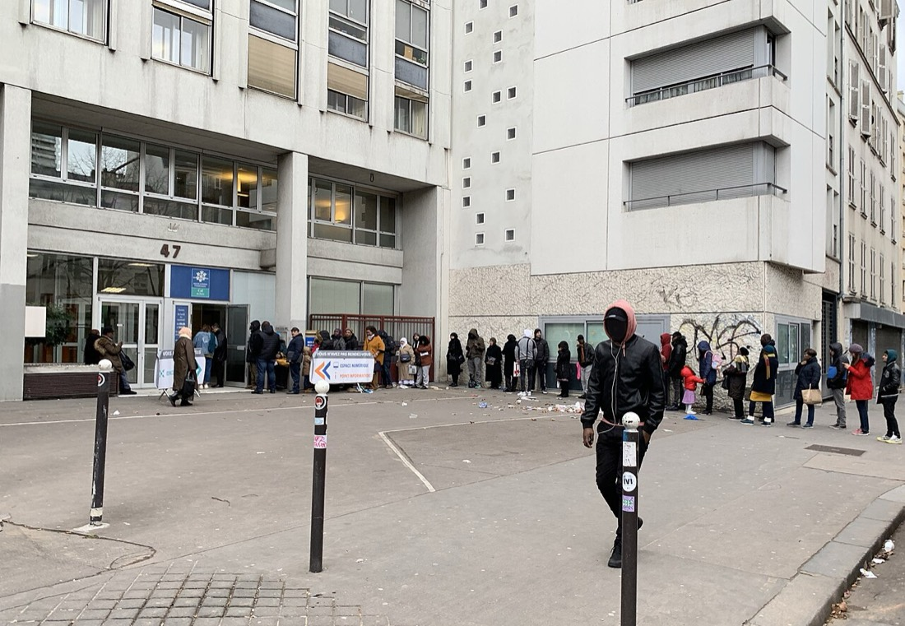
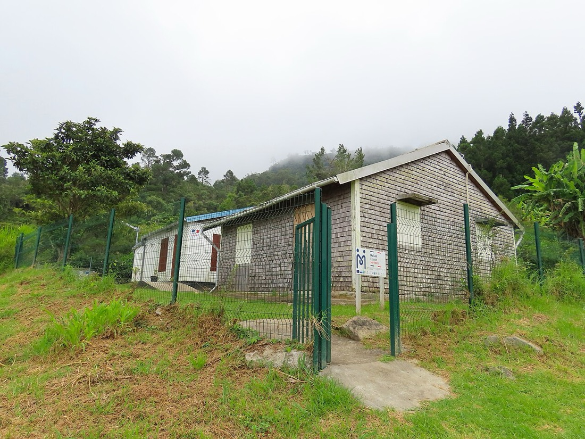
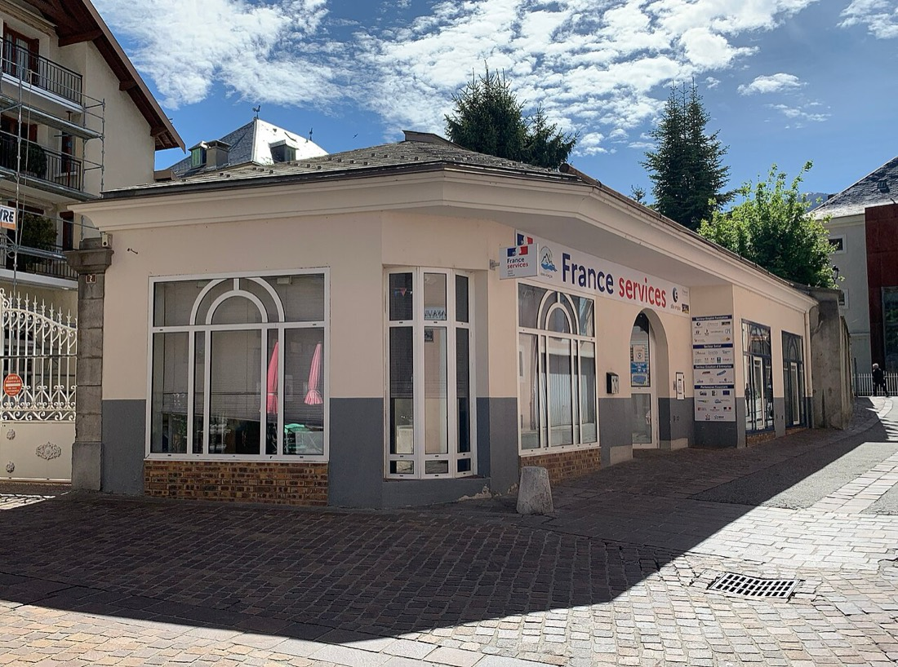

Le Dossier IA AI risk and governance, MKTG 644 Session 9
A government uses generative AI to make a financial-literacy ad for lower-income citizens, and an algorithm targets it by balancing reach and cost. What are the risks, and who do they hurt, how badly?
Présenté par Alan Asman Prof Ernst Osinga’s class
Example ad made for this deck. Not a real campaign.
AI writes the words and makes the picture.

Picks who sees the ad: the most reach for the least money.

Sees the ad, or never does.
Session 9’s task: find the risks, then map who gets hurt and how badly.
The tags come from Session 9. Inherited comes with the vendor’s model, added comes from our own choices. Deliberate means someone chose it, accidental means nobody meant it.
Each circle is 100,000 people in the target group. Behind them, the white tiles of a Paris métro station, where people see ads on their phones. Prices are mock figures; the real pattern is in sources 4 and 5.
Every number is green. Now split it by who was reached.
A neutral ad for science careers reached fewer women, because younger women cost more to reach.4
Facebook’s delivery skewed real job and housing ads by gender and race.5
Session 9 calls this optimising the wrong metric. The algorithm did its job. The job was wrong.

A policy and a named owner.
Checking and monitoring.

What Alan recommends before the campaign launches:
Et maintenant : les agents.Next: how agents could run this campaign.
The same ad after a person checks it, labelled as AI-made and linked to the Banque de France portal.15
Next week’s Session 10 exercise, applied to this campaign: redesign the workflow with agents.27
The revision loop. Legal finds a problem and the ad goes back to creative, then waits again.
Too late to fix. Analytics judges the campaign after it ends, when the €240,000 is already spent. The 0 % on slide 2 would only show up here.
Reach every income group, at least 60 % each, inside €240,000.
Drafts the ad in variants, by region and language
Checks figures, AI label and tone before any spend
Buys reach with a floor for every group
Reports reach by group every day and feeds it back
Agent types (generate, analyse, extract) and “reinvent, don’t just agentize” are from Session 10.27
No ad reaches citizens unchecked: the fix from slide 3, built in.
A person decides: shift budget, change the ad, or go offline.
They can reverse a decision or retrain an agent.
Session 10: people focus on strategy and stakeholders.
Merci, et vive la France !
Alan’s recommendation in one line: keep a person between the machines, judge the buyer by who it reaches, and build the agents on a stack France can own.
Questions ? Ask Alan, or ask Claude live (press Q).
Mock report: every figure comes from the slide 2 model, checked by recalculation. Not real data.
Photos from Wikimedia Commons: Paris métro by besopha (CC BY 2.0), Mafate France Services by Rémih (CC BY-SA 4.0), CAF Paris 18e by Cheep (CC BY-SA 4.0), France Services Embrun by Benoît Prieur (CC0). Class exercise for MKTG 644, not a French government publication.
Checked on 6 Nov 2026 on each publisher’s own page. Benchmark claims are Mistral’s own and are not shown. The Mistral colours are used without its logo; this class exercise is not affiliated with Mistral AI.